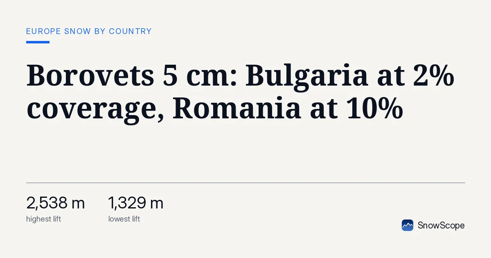
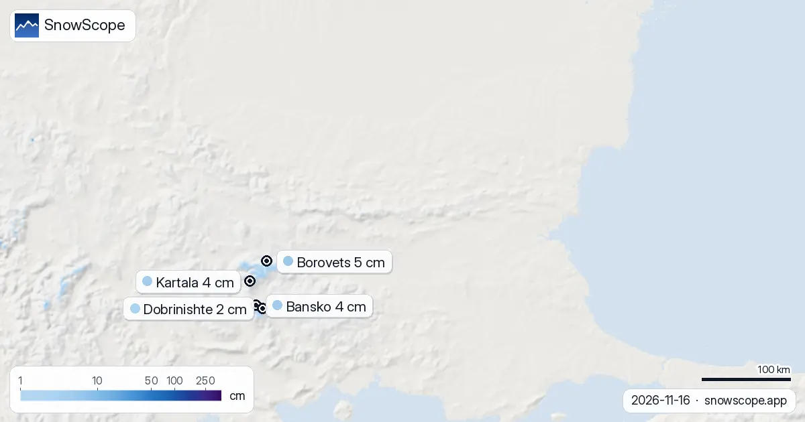

Borovets 5 cm: Bulgaria at 2% coverage, Romania at 10%
At Borovets this morning, the base sits at 5 cm from three days of fresh snow. Bulgaria is now covered in white on just 2 percent of its mountains, while Romania to the north has claimed 10 percent coverage.
See the live snow forecast for Borovets in the SnowScope appSnow depth, powder alerts and the 3D map, free.
High ground holds the snow: Borovets meets Bulgaria's first snow day at 2538 m
Working these mountains on Bulgaria's first snow day of the season, you see the pattern immediately. Snow stops cold below 2100 metres. The bands show it: nothing at all below 2000 m, and between 2000 and 2500 m the average depth sits at just 2 cm. Only the peaks above 2500 m hold real snow, averaging 5 cm with complete cover.
Borovets stands high enough at its summit (2538 m) to catch that snow. Most of Bulgaria is simply too low. The 2 percent coverage reflects an early season in a dry mountain country. Romania's higher ranges, by contrast, surpass that snow line more often, reaching 10 percent.
| Country | White | Deepest resort | Next 7 days |
|---|---|---|---|
| Bulgaria | 2 % | Borovets | 9 cm |
| Romania | 10 % | Borsec | 13 cm |
| Serbia | 0 % | Avantura park | 8 cm |

Romania's mountains are higher; Serbia shows the winter still turning
Look north to Romania and the picture shifts sharply. Borsec, leading at 48 cm, runs nine times deeper than Borovets. Romania's 10 percent coverage makes geographic sense. To the west, Serbia puzzles: 0 percent coverage yet Avantura park holds 28 cm. Such depth without coverage means snow is scattered and high, not yet joined into continuous white.
The forecast matters too. Over the next 7 days, Romania will see 13 cm of new snow; Bulgaria's ceiling is 9 cm. The neighbors have both higher peaks and heavier weather on tap.

Rila and Pirin: where the depth actually sits
Track the fresh snow and you find Bulgaria's strong spots. The Rila Mountains collected 15 cm in the last 72 hours—the country's best. The Pirin Mountains took 12 cm. These high ridges are where the moisture lands and sticks. Only 5 of Bulgaria's 11 resorts have snow on the ground at all.
Borovets and Bansko lead the resort list in depth, but both are thin below their peaks. If you need snow that lasts and skis well, the Rila and Pirin high terrain are where it is.
November 23 is the first proper snow day; until then, it stays quiet
The next three days will offer almost nothing—just 1 cm in the forecast. But jump forward to November 23 and the pattern shifts. That day is modelled as the snowiest: 5 cm is expected. Mark it as your first real snow date.
After November 23, the second week of late November shows 6 cm more. Early season builds slowly in the Balkans.
Up fast in three days, down on the week
The 72-hour snow event brought 7 cm to the best-hit areas, and coverage jumped. Yesterday Bulgaria had 630 km2 in white; today it has 690 km2—a swing of 60 km2 in one day. That is momentum from fresh snow.
But look back seven days and you see 1000 km2 was covered. We have lost 310 km2 of white. November is a losing month in the Balkans until late in the season. The weather swings both ways.
Altitude controls everything: snow by the metre
The model slices Bulgaria by height and the story is stark. Below 1500 m: no snow. Between 1500 and 2000 m: still nothing. The snow line runs at 2100 m.
Jump to 2000–2500 m and you find 2 cm average depth, with 75 percent of the terrain holding white. Go above 2500 m and you see 5 cm average with complete cover. Early season snow burns off or slides away on warm ground. Only the high, exposed slopes keep it. The altitude band says everything.
Tips for skiers
- At Borovets and Bansko, ride above 2500 m; below that height, rocks show through and snow melts by midday.
- Push into the Rila and Pirin high peaks; they hold 15 and 12 cm respectively, twice what the resort bases show.
- Early season snow is structurally weak; before going off-piste, consult the official avalanche bulletin—new snow slides readily.
- Avoid terrain below 2100 m for now; the lower valleys will stay brown for at least another week.
- Mark November 23 on your calendar; that is modelled as the first solid snow day with 5 cm expected.
About these numbers
Resort snow depths are the deepest snow on the resort's upper slopes from the SnowScope snow model (about 1 km, run of 16 November); they are estimates for an area, not a measurement at one point. Station values are measurements on the date shown. Forecasts can change. Always read the official avalanche bulletin before going off-piste.
Cite this report
For research, teaching or the press: the numbers and charts are free to reuse under CC BY 4.0 with this citation.
SnowScope (2026), Borovets 5 cm: Bulgaria at 2% coverage, Romania at 10%, https://snowscope.app/blog/en/2026/11/bulgaria-snow-report-16-november-2026.html, accessed 2026-11-16
SnowScope (Atlas Labs). (2026, November 16). Borovets 5 cm: Bulgaria at 2% coverage, Romania at 10%. SnowScope snow reports. https://snowscope.app/blog/en/2026/11/bulgaria-snow-report-16-november-2026.html
BibTeX
@misc{snowscope2026bulgariasnowreport16nove,
author = {{SnowScope (Atlas Labs)}},
title = {Borovets 5 cm: Bulgaria at 2% coverage, Romania at 10%},
year = {2026},
month = nov,
howpublished = {\url{https://snowscope.app/blog/en/2026/11/bulgaria-snow-report-16-november-2026.html}},
note = {Published 2026-11-16 20:42 UTC; accessed 2026-11-16}
}· CC BY 4.0 · Methods, data and tools →
Borovets: snow and temperature by height, this winter vs last (tools) →
Follow Borovets
Free: a message when fresh snow is coming, and the forecast every morning.
More snow reports

Slovenia has only 6 % white cover today against Austria's 34 %. Fresh snow in the Julian Alps offers the best chance for early season runs. Data from 17 November.

On 13 November 2026 the weather stations in Stockholm and Helsinki measured 0 cm of snow while Sälen had 45 cm and Umeå 20 cm. Height, the sea, the city and the track of the storms explain it, with numbers from 46 past winters.

Monterosa Ski day passes run from 40.00 to 71.00 EUR online. In December the snow is up high: 124 cm usual at 3030 m, 6 cm at 1207 m.